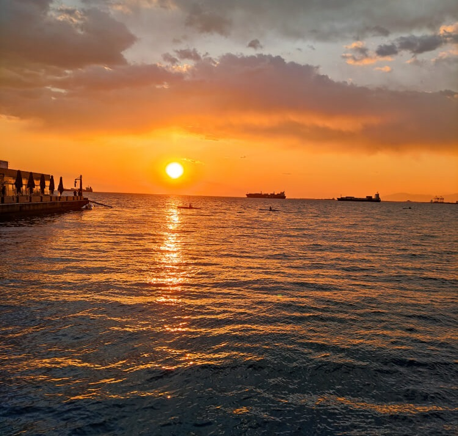
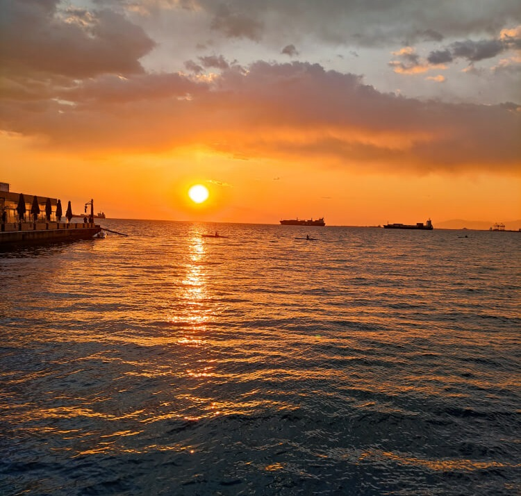

Reflecting a little bit on my background, I was raised in a small town in Greece where I was close to nature and I had been taking part in many sporting activities in closed and outside spaces from the early years of my life. After my years in high-school, I did my Bachelor’s degree in Political Science in Aristotle University of Thessaloniki in Greece. This Bachelor’s degree was valuable to set the foundations for a strong academic knowledge regarding society, international relations and the operation of the European Union.
Alongside my studies, I had been a professional basketball athlete for 5 years. After my Bachelor’s, I understood that I was missing something, and I wanted a new opportunity to get my hands on a different and exciting field. And what is more exciting than to work in a fundamental part of a business, be close to employees and help them flourish at the same time as I will develop myself? Since these were my main goals, I chose to start this Master’s program in Human Resource Management at VU Amsterdam to develop my skills in people management, gain a deeper understanding on how businesses operate and acquire useful skills such as recruitment & selection skills, consultancy/advisory skills and talent development and analysis skills. Thus, this year has been one of the most insightful and valuable experiences in my life so far as you will see in the projects that I was a part of.
Another fundamental part of my personality is my personal interests. Since I am an active and curious person, I love everything that has to do with sports (especially basketball), travelling to see new places, get in touch with different cultures and meet new people. Also, I really enjoy spending time with friends and creating memories as one of my main hobbies is photography.
 
